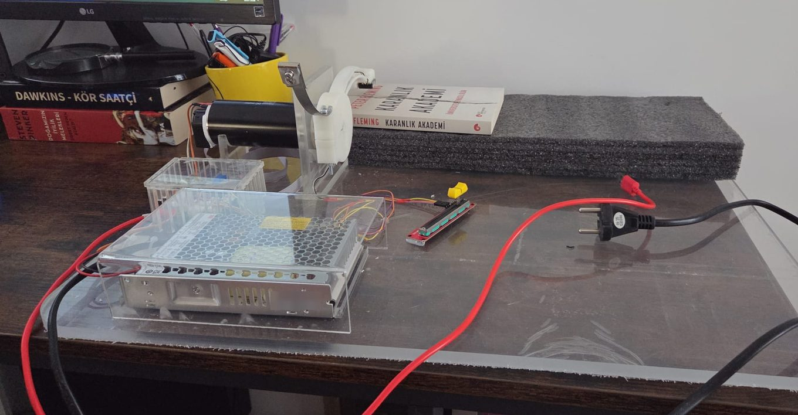

Building the force-matching rig
What the device page records is where the instrument ended up. This is the part that record leaves out: what had to be decided, and what I got wrong on the way.

19 July
Spent the day finding out that “force matching” names at least four unrelated paradigms. Only one of them measures sensory attenuation, and it is the one that needs a torque motor, a target force delivered to the finger, and two matching conditions. The others share nothing but the phrase.
This is worth a day because the failure mode is quiet. You can build a rig correctly to the wrong specification, run it, and get clean data that answers a question you were not asking. So the lineage went into its own document, with the excluded namesakes listed explicitly, before any metal was cut.
20 July
Rewrote the calibration tool. The version I had asked me to type in the readings, which meant the numbers that decided whether a calibration passed were transcribed by the person who wanted it to pass.
The new one measures eight criteria: gain, offset, R², RMSE, maximum absolute error, hysteresis, tare shift and drift. It issues a calibration ID, evaluates each criterion against a threshold, and if any of them fail it declines to write the calibration file. That last part matters more than the arithmetic. A failed calibration that is merely reported can still be used by accident; one that was never written cannot.
22 July
Had to choose a lineage for the indirect condition, and the two available choices are not equivalent.
McNaughton maps the slider to motor position, linearised with a fourth-order polynomial. The older UCL work maps the indirect input to a force servo, so the motor is commanded to produce a force rather than to travel to a place. Both paths existed in my code because I had written both while working out which was which.
I locked the force servo as the primary mode. It puts the two conditions on the same physical quantity: the participant produces a force directly, or asks for a force through the slider, and the comparison is force against force rather than force against a position that stands in for one. The position path stays in the code, unused. It will be reported as untested rather than as rejected, because I never ran it against anything.
27 July
Found that my own lineage document was out of date, which is a specific embarrassment when the document exists to prevent exactly that.
The box at the top still described the rig as belonging to the McNaughton line. That had been true when I wrote it and stopped being true five days earlier when I locked the force servo. The rig takes McNaughton’s timing, target forces and analysis window, and the UCL topology for how the indirect condition delivers force. It is a hybrid, and calling it a replication of either one is wrong in both directions.
Corrected the box and added the date, so the correction is visible rather than silently folded in.
The same day, a measurement problem in the slider itself. I had been modelling the relationship between the potentiometer’s output and its physical travel as a straight line. It is not one, and the straight line was leaving 13.2 per cent deviation.
That sits in exactly the wrong place. It is the step that turns slider position into a force target, so it sits between what the participant asks for and what the motor delivers, in the condition whose whole purpose is to separate those two. Replaced it with piecewise-linear interpolation. The old linear coefficients are still written to the record but no longer compute anything, because a transformation that has been shown wrong once should not be able to come back quietly.
28 July
Closed the calibration. Traced the force channel against dead weights over the whole range the task uses, 0 to 4.066 N, which puts every experimental target inside measured territory with nothing left to extrapolation. The fit gives R² = 0.9998 and an RMSE of 0.021 N, against a threshold of 0.05.
The number I did not expect was hysteresis. I had measured rising and falling loads as separate sequences instead of pooling them, on the argument that direction-dependent error is real and pooling is how you hide it from yourself. It came to 0.0498 N against a 0.05 N ceiling. It passes by 0.24 mN. Had I pooled the sequences the way the older tool did, that would have vanished into the RMSE and I would have recorded a comfortably clean run.
Seven criteria measured, seven passed. The eighth is drift, and I could not measure it at all: drift is a comparison between two calibrations and this is the first one. So the honest statement is not that the instrument passed eight checks. It is that it passed the seven that a single session can produce, and that this record is now the reference the next session gets compared against.
Also settled the contact pad. Earlier runs had no silicone pad, then had one, then briefly did not again. Since the pad changes what the finger feels, none of that engineering data can go in the analysis pool, and the confirmatory collection runs on the fixed configuration with the pad. That decision costs nothing now and would have cost the study later.
1 August
An outside audit flagged the slider calibration as critical. It was right to.
The calibration rested on a handful of points entered by hand, and the curve fitted through them implied more force than the rig can produce. A mapping cannot deliver force the instrument does not have, so the error was in the points and not in the curve.
Both fits were excellent by R², which is where the trap sits. A curve through mismeasured points fits those points beautifully, and goodness of fit says nothing about whether the measurement underneath it was any good. I knew that. I had still looked at my own number and felt reassured by it.
The measurement gets repeated. What I actually want in the log is smaller than that: I did not find this, and I would not have gone looking.